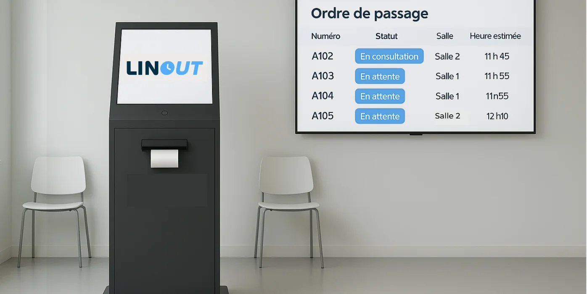

Framing
- ProblemIn walk-in practices, patients wait 90 minutes on average without knowing when their turn will come, and GPs have no simple way to manage the queue.
- What I didA full discovery cycle with my team: field research with GPs and patients, value proposition, user flows and a kiosk + web-app concept. As research lead, I defined the research strategy and supervised the team.
- ImpactA concept tested on digital interfaces and physical kiosks, a go-to-market plan, a 3-year business model and a usability test protocol with measurable success criteria.
Context
Context and question
- GPs in France102,000General practitioners
- Offer walk-in slots≈ 2 in 5About 45,500 GPs, our target market
- Average wait90 minIn a practice without appointments
Walk-in consultations are common, but nobody knows how long they will wait. Patients sit in the waiting room for an hour and a half, and doctors have no clear view of who is still there, late or gone.
How can we give patients a clear view of their waiting time at their GP, so they can organise their time better?
Method
Approach and methodology
- Field research with 2 GPs and 6 patients to understand waiting-related friction on both sides.
- Value proposition and concept: a kiosk in the waiting room, a waiting-room screen and a web-app reached by QR code.
- User flows for the two audiences, patients and doctors, then wireframes and acceptance tests on screens and physical kiosks.
- Go-to-market: communication strategy, business model, roadmap and a usability test protocol.
Solution
The solution: Linout

Mode 1
With an appointment
- Patients enter their appointment time
- Information about the wait and any delay
- A screen in the waiting room
Mode 2
Without an appointment
- A virtual queue with a ticket number
- People ahead and estimated waiting time
- A QR code to follow the queue in real time on a web-app
Doctor side
- A permanent display of the next appointments and any delays.
- Each appointment is validated in one click.
- Clear information about no-shows and late arrivals.
User flows for patients and doctors
![User flow. Patient: if the day has appointments, the patient enters the appointment time, gets delay information, waits in the waiting room and is called by name. If not, the patient joins the waiting list, prints a ticket with people ahead, estimated time and a QR code, accesses the web-app, gives a phone number to be notified two appointments before, and is called by number. Doctor: opens Linout on the computer, sees a permanent display of the next three appointments or the number of patients waiting, then validates each appointment and moves to the next.](../assets/linout-user-flow.webp)
My role
Leading the research strategy
In a lead position, I framed and supervised the research so that every product and business decision rested on evidence from the field.
- Research strategy: I turned the team's intuition into research questions and hypotheses, and chose the methods for each stage, from field research to usability testing.
- Team supervision: I coordinated the Business Analyst and the Project Manager during field work and synthesis, so that research, business and planning moved forward together.
- Test protocol: I designed the usability test, with hypotheses, measurable success criteria and the recruitment of patients and GPs.
- From findings to decisions: I made sure insights fed the value proposition, the user flows and the go-to-market plan.
Go-to-market
Communication strategy: reaching GPs
The team built a communication plan to make Linout known to the GPs who would buy it.
- 45,500GPs offering walk-in slots
- 3key messages
- 6months of launch plan
- 3KPIs to track
Who and what
- Target: GPs who offer walk-in consultations.
- Key messages: better patient satisfaction, time saved, and simplicity of use.
Strategy
- Door-to-door canvassing to recruit pilot practices, collect first feedback and build trust.
- Targeted online ads and specialist medical magazines to gain visibility with GPs.
- Seasonal medical peaks, such as winter epidemics, to time messages when waiting rooms are full and make the most of the budget.
Budget and conversion
- Online ads€600 / monthGoogle, Meta and LinkedIn
- Specialist magazines€300 / monthPrint advertising
- Print materials€1,000Brochures and business cards, one-off
- Test budget€1,500To validate channels before scaling
Every channel leads to a form on a landing page, then to a video call to present Linout. Success is measured by site visits, number of calls and meetings booked.
Impact
Business model, roadmap and test protocol
Business model
- Subscription€169.99 / monthBilled annually; installation fee waived
- Revenue€102k → €918kYear 1 to year 3, about 50 to 450 subscriptions
- Net result–€20k → €160kBreak-even from year 2
- Funding need€60,000Loans, personal contribution and grants
Roadmap
- Phase 1 (0–6 months): pilot project, communication, usage tracking, development.
- Phase 2 (6–18 months): regional roll-out, medical centres, word of mouth, continuous improvement.
- Phase 3 (18–36 months): team structure, strategic partnerships, fundraising, national roll-out.
Usability test protocol
Goal: evaluate the usability and clarity of the Linout journey on the kiosk for patients with and without an appointment, and for doctors.
| Hypothesis | Success criterion |
|---|---|
| Appointment time only | Users understand that only their appointment time is needed to check in: correct entry and validation in under 1 minute. |
| QR code | Users understand they can scan a QR code to follow the queue on their phone: at least 4 out of 6 scan it without help. |
| Position in queue | The mobile interface shows their position and when to come back: at least 4 out of 6 describe it correctly. |
- Participants: 6 patients (3 with and 3 without an appointment, aged 18+, varied digital skills) and 2 GPs aged 28 to 70, one using Doctolib or Maiia and one using no tool.
- Method: 20 to 30 minute sessions, think-aloud and observation, on the Linout kiosk and web-app, across 3 scenarios.
- What we track: NPS, average time at the kiosk, clarity for patients, time saved for doctors, renewal rate and technical incidents.
Retrospective
What I learned and what I would do differently
- Designing for two audiences at once, patients and doctors, means every screen must answer two different questions: "when is my turn?" and "who is next?".
- Leading the research meant keeping a balance between speed and rigour: clear hypotheses and success criteria helped the whole team agree on what "validated" means.
- What I would do differently: run the usability test on the kiosk before finalising the business model and the communication plan. Testing earlier with patients and GPs would have shown sooner which features really save time, and made our pricing and key messages rest on observed behaviour rather than assumptions.